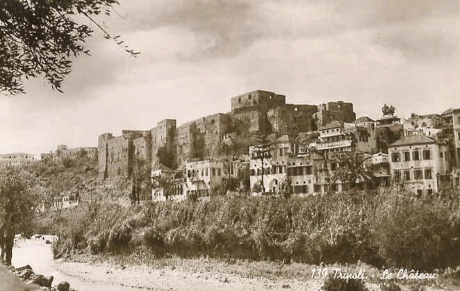
قلعة طرابلس (سان جيل)
قلعة صليبية الأصل بناها ريمون دي سان جيل عام 1109، أعيد بناؤها لاحقًا خلال الحكم المملوكي، وتطل على المدينة القديمة. تعتبر من أهم المعالم التاريخية في لبنان.
المزيد 🛈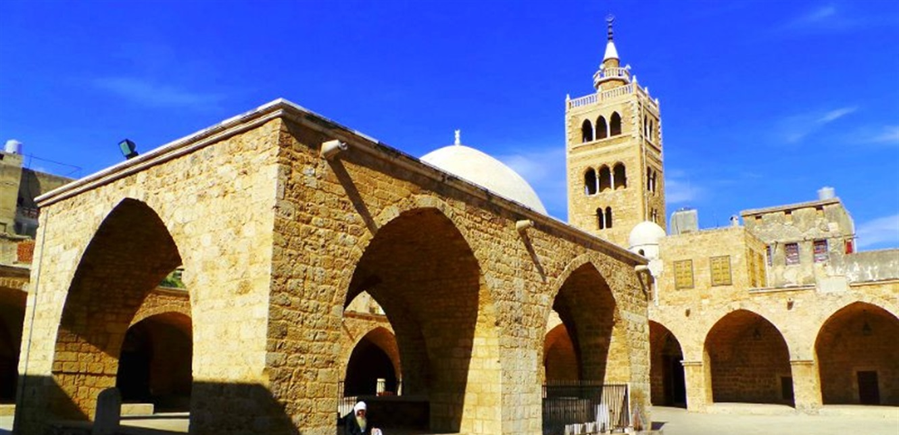
الجامع المنصوري الكبير
بُني في القرن الثالث عشر فوق كنيسة صليبية قديمة، ويُعد تحفة مملوكية بهندسة معمارية راقية تشمل القباب، الأقواس، والمآذن العالية.
المزيد 🛈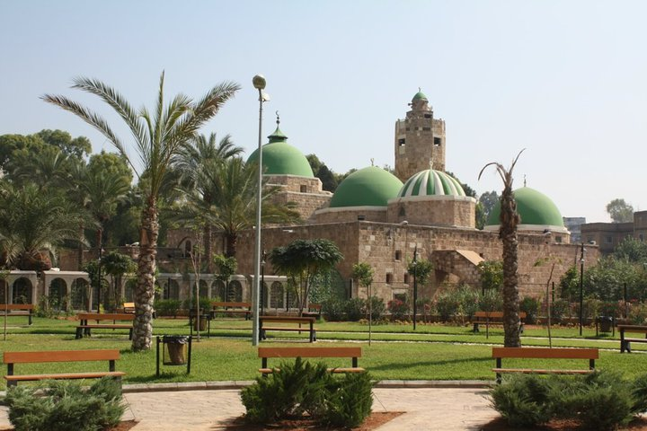
مسجد طينال
شُيّد في عام 1336 على أنقاض كنيسة قديمة. يتميز بقبة كبيرة، وعناصر معمارية من بقايا رومانية. ويضم ضريح الحاكم المملوكي الأمير تينال.
المزيد 🛈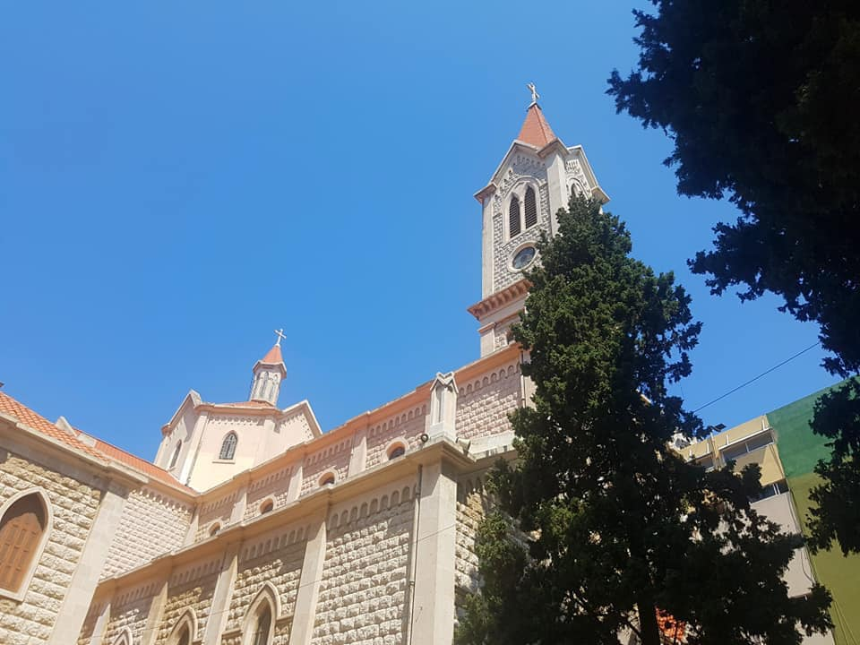
كنيسة مار مارون
تعتبر من أقدم الكنائس المارونية في المدينة، وتقع وسط الحي المسيحي في طرابلس. تتميز بتصميمها البسيط، وجدرانها الحجرية السميكة التي تحاكي التراث المعماري اللبناني، وتُعد مركزًا روحيًا وثقافيًا للمجتمع المحلي.
المزيد 🛈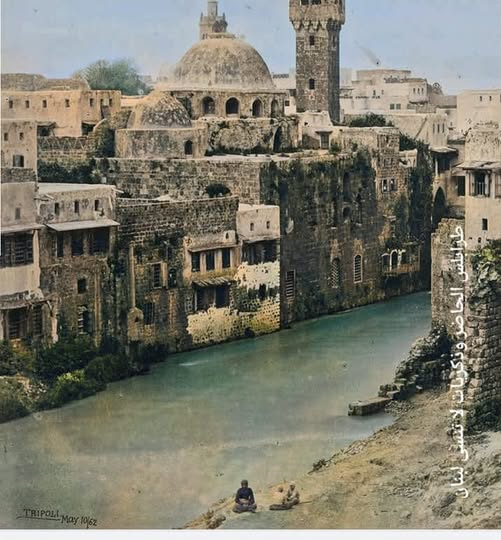
نهر أبو علي
نهر يمر عبر قلب المدينة القديمة، ويقسم طرابلس إلى ضفتين. كان مصدرًا رئيسيًا للمياه، وقد ساهم في تطوّر الأسواق والخانات المحيطة به. يعبر فوقه العديد من الجسور التاريخية التي تربط الأحياء القديمة ببعضها البعض.
المزيد 🛈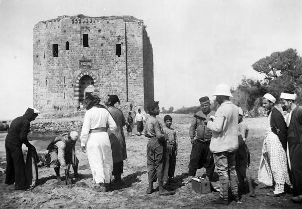
برج السبع
برج دفاعي بناه السلطان المملوكي برسباي في القرن الخامس عشر لحماية المرفأ، ويعتبر جزءًا من التحصينات الساحلية للمدينة.
المزيد 🛈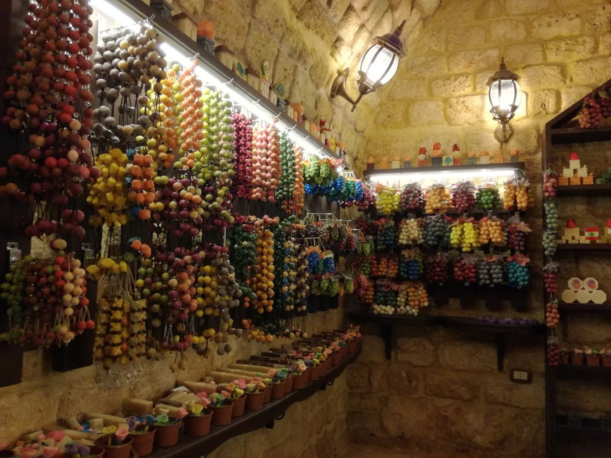
الحمامات والخانات
تضم طرابلس عدة خانات مثل خان الصابون وخان الخياطين، وحمامات قديمة كحمام عز الدين، استخدمت للتجارة والاستجمام منذ قرون.
المزيد 🛈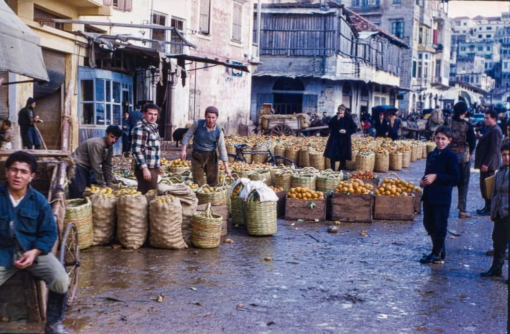
الأسواق القديمة
تعد من أكبر شبكات الأسواق التراثية في العالم العربي، وتحتوي على سوق النحاسين، العطارين، والصاغة، حيث تباع المنتجات الحرفية التقليدية.
المزيد 🛈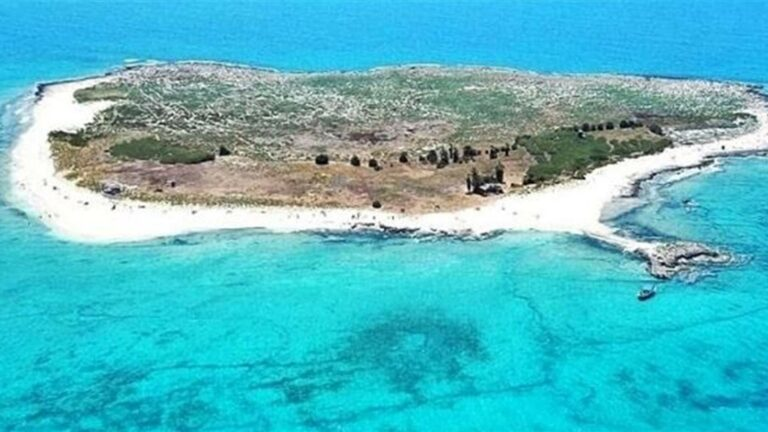
محمية جزر النخيل
تضم ثلاث جزر على بعد حوالي 5 كم من الساحل، تحتوي على أنواع نادرة من السلاحف والطيور، وتعد محمية طبيعية محمية دوليًا.
المزيد 🛈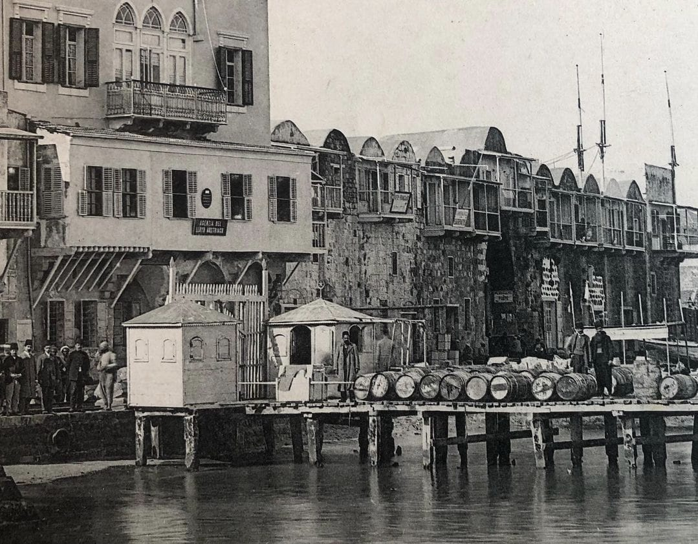
المرفأ والكورنيش البحري
واجهة بحرية رائعة للتنزه ومشاهدة الغروب. الميناء يُستخدم للصيد المحلي ويقع قرب جزر النخيل، ويُعد من الأقدم في لبنان.
المزيد 🛈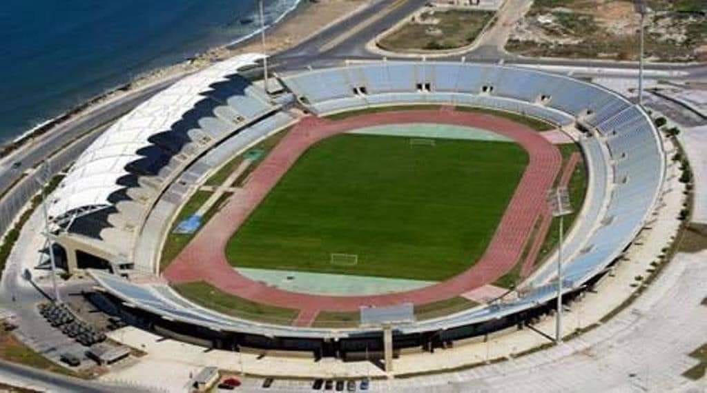
الملعب الأولمبي الدولي
افتتح عام 1999 ويتسع لأكثر من 22 ألف متفرج. يُستخدم للأحداث الرياضية الكبرى والمباريات الدولية.
المزيد 🛈